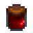

DemonOfSarila
Joined 6 October 2023
Year 2
Spring
- Plant at least 5 coffee plants on Speed-Gro
- Chicken, Cow (grass starter on last day of winter)
Bundles
Useful & doable
- Foraging Bundles (seeds, for tea, for money)
- Quality crops & Animal Bundle
Useful, but currently out of reach
- Enchanter's Bundle (5 Gold Bar) - Wine (get the keg), Rabbit's foot (um... drop from rabbits)
Gifts
| Name | Gift | Name | Gift | Name | Gift |
|---|---|---|---|---|---|
|
|
 Jelly
The breakpoint is  50g for fruits and
50g for fruits and  200g for vegetables. Anything that or down, jelly/pickle. Anything above that, Keg. (* = same price for wine or jelly, but jelly faster, so jelly)
200g for vegetables. Anything that or down, jelly/pickle. Anything above that, Keg. (* = same price for wine or jelly, but jelly faster, so jelly)
|
|
Trees
| Name | Grown Tree | Seed | Tapper |
|---|---|---|---|
| Maple |  |
||
| Oak |  |